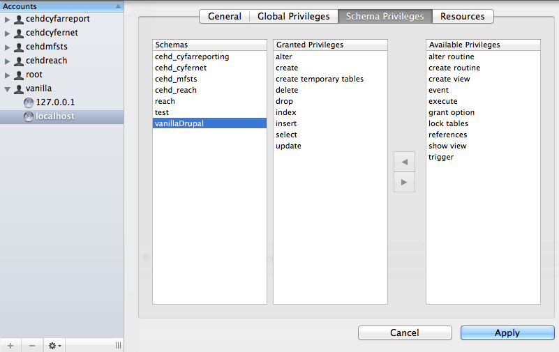

On inherited Drupal sites, it can be really challenging to find the source of some content that is displayed on a webpage. Try this:
grep -rI -e ‘your phrase’ .A typical page is built using a template. Templates are nothing more than HTML with areas carved out for dynamically generated content. These reserved areas are called Regions.
You can put Blocks inside of Regions. Blocks are static snippets of HTML code (e.g. privacy statement) or HTML code dynamically generated (e.g. current weather) by a Module.
To summarize, Regions are empty spaces where you can put content. Blocks are content that is intended to appear on multiple pages.
You can manage (control placement location and when to display) your blocks through the Administration/Structure/Block page (http://example.com/admin/structure/block).
For simple sites, Drupal’s built-in functionality for managing Blocks works well, but for site’s with advanced needs, then a couple of alternatives might be better. Take a look at:
Context Module: Context allows you to manage contextual conditions and reactions for different portions of your site. You can think of each context as representing a “section” of your site. For each context, you can choose the conditions that trigger this context to be active and choose different aspects of Drupal that should react to this active context.
Think of conditions as a set of rules that are checked during page load to see what context is active. Any reactions that are associated with active contexts are then fired.
Panels: The Panels module allows a site administrator to create customized layouts for multiple uses. At its core it is a drag and drop content manager that lets you visually design a layout and place content within that layout. Integration with other systems allows you to create nodes that use this, landing pages that use this, and even override system pages such as taxonomy and the node page so that you can customize the layout of your site with very fine grained permissions.
Most (all?) themes have a Region called “Content” and a Block described as “Main page content” that is automatically assigned to it. This is where the “meat” of your web page content goes. I’m not exactly sure if there is any significance to the “Content” Region and “Main page content” Block, but I did find this on a support forum:
The Main page content block is basically a given. It needs to appear on all pages and should always be assigned to the page content region to avoid issues.
The content on a page is first expressed as a Render Array. Right before the page is displayed to the user that array of data is converted to HTML. They are similar to the Form API arrays, but they need to first be converted to a Render array by drupal_get_form().
This slidedeck has some information, but I'm not sure how complete it is. You will need to do a lot of guessing as to what it means...
The Drupal Overview page could be a good resource too.
Increase the max_allowed_packet size (found in the [mysqld] section of
See my notes in Evernote, but in a nutshell Drupal needs:
Cake needs write access to app/tmp/ folder.
When running in Production, your Drupal user will need these permissions: alter, create, create temporary tables, delete, drop, index, insert, select, and update.

First thing, install and use devel. There are several development and debugging related things that it can do.
Note, in working on drupal code, it will be extremely helpful for you to have access to the dpm() function. This function is provided by the Devel module. https://drupal.org/project/devel A call to dpm($something) if Devel is enabled will print out the variable contents to the page if the viewer is logged in as an administrator. If the variable is a nested array, it will give you a nice structure where you can walk through the contents of the array by opening and closing various sections. While you’re working on those features, this function will be very helpful to look at the arrays you’re working with. Working on Drupal code is almost impossible without using this function since almost everything is contained in giant arrays in Drupal.
dpm('I hit this line of code.');If you intend to keep debugging code in your production site, wrap it as follows:
if (module_exists('devel')) {
dpm('my debug message goes here');
}
Some errors are only reported when all PHP error reporting is switched on. Without the error reporting on, you get the dreaded White Screen of Death.
You can show all errors by adding a few lines to your local testing site's settings.php:
<?php
error_reporting(E_ALL);
ini_set('display_errors', TRUE);
ini_set('display_startup_errors', TRUE);
//Note: Do not include the opening and closing PHP tags when you copy this code
?>
In addition, navigate to Administration→ Configuration→ Development → logging and errors and select "All messages". (This sets $conf['error_level'] = 2; .)
Or you can go through your development site's php.ini file, in the php folder, and switch all error reporting on. To do this, check through your php.ini file and set error reporting to E_ALL | E_STRICT. The documentation there is very thorough, and you may find a different setting that's better suited to your needs. Warning: as the PHP documentation states, this setting is only for development sites, not for production sites.
The easiest way to do this if you just want to make sure that each participant's name field has something in it (without caring what that something is), you can do this just by adding the '#required' property to the name textfield in _participants_participant().
IF you have more advanced validation requirements and the above is not what you need (eg. you want to make sure the contents actually resemble a name, and isn’t say, a link, or a number) This can be accomplished by using the #element_validate property when building the 'name' textfield form element of the component in _participants_participant(). This property should contain an ARRAY of the function names it is supposed to call (like a callback) in order to validate the element. This must be an array; a scalar value will fail. If there’s only one function you want to call, list that in array that contains a single string. These function names should be functions that have a parameter signature of: ($element, &$form_state, $form), where $element is an array that will contain the calling element, $form_state will be the current state of the form (retrieved from POST) and $form will be the form API structure of the form. Within that validation function, you can use form_error or form_set_error in order to trigger a validation error on the form. https://api.drupal.org/api/drupal/includes%21form.inc/function/form_set_error/7 https://api.drupal.org/api/drupal/includes%21form.inc/function/form_error/7
For an example of using #element_validate, see here: http://befused.com/drupal/element-validate
On your local install version, do this to upgrade Drupal using Drush:
$ drush archive-dump
archive-dump will copy the database and all the files. It puts it in a gzip tar ball and by default it goes to ~/drush-backups/archive-dump/$ drush up drupal
Prior to running the command, make sure you have write permissions and the webserver doesn’t have any locks on the files. This can be accomplished by stopping the website and then using Task Manager to kill the w3wp processes and php* process owned by the site you just shut down.Users will be granted to an object once anything gives them access to it. Said another way, you do not have security to do anything else you have been granted access. This is a “white-list” type of system.
When creating views or menus, you can use this to your advantage. Don't restrict access inside the view, rather let Drupal’s permission system take care of that.
Turn off the "Update Manager" module to improve speed on the Production and Local environments. You will probably want to keep it enabled on Dev so at least something is checking for updates. Better yet, make this part of the roll-out procedures.
The WinCache extension should be installed into PHP. Look in the PHP Extensions folder - the config should have that enabled.